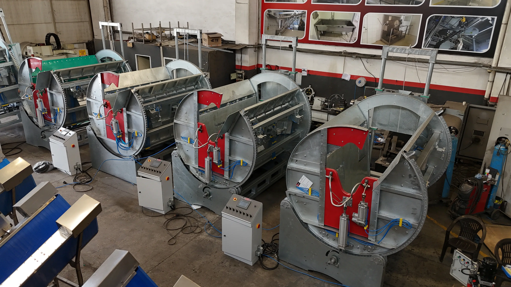
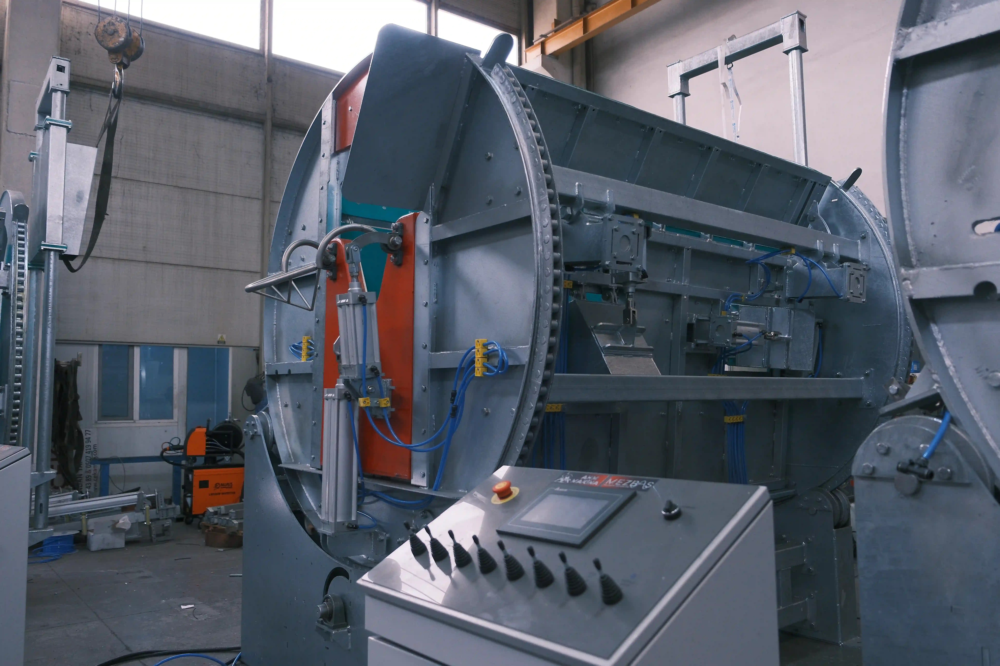
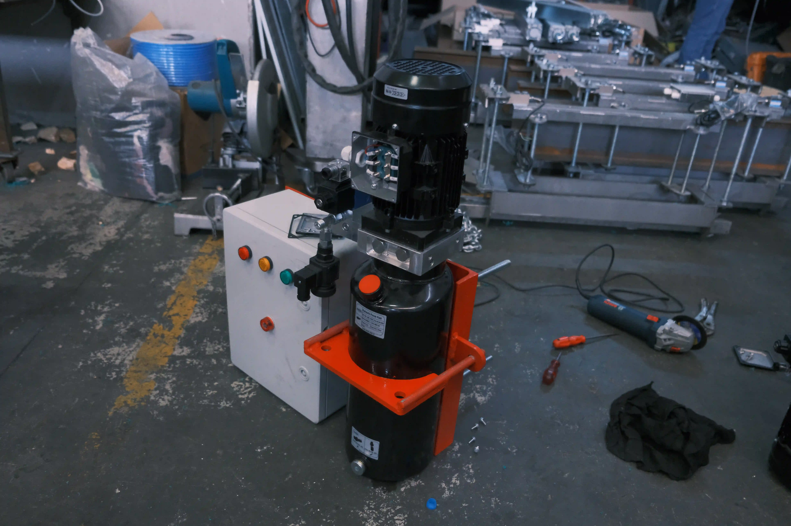
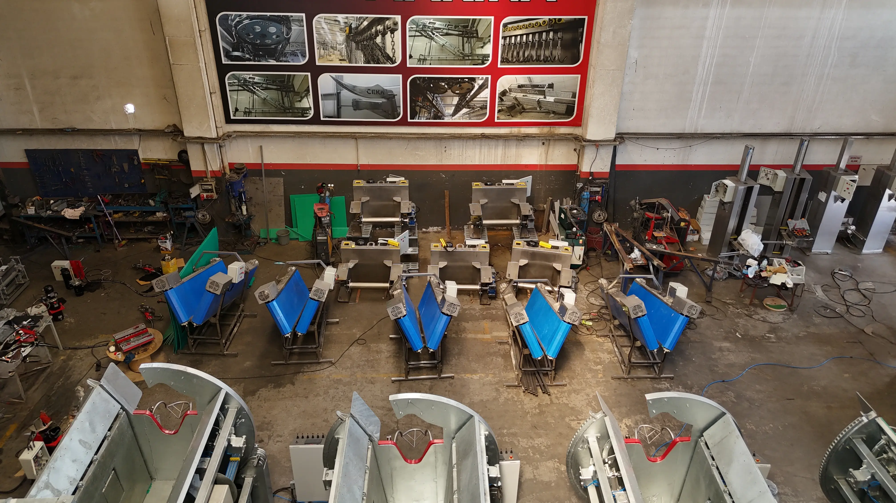

Büyükbaş Kesim Hattı
Dairesel kesim hücresi, büyükbaş kesiminde hayvanı güvenli şekilde sabitleyerek kontrollü kesim yapılmasına yardımcı olur. Kesim sırasında çırpınmayı azaltır, operatör güvenliği ve hijyen standartlarını destekler.
Dairesel kesim makinası olarak da bilinen bu çözüm, büyükbaş kesim hücresi ihtiyacı olan tesislerde hat akışını düzenler ve işletmeye özel ölçülerle üretilebilir.
Çalışma sistemi ihtiyaca göre hidrolik veya pnömatik olarak tasarlanabilir. Gövde malzemesi olarak 304 kalite paslanmaz çelik veya sıcak daldırma galvaniz seçenekleri sunularak uzun ömür ve kolay temizlik hedeflenir.
Helal kesim süreçleriyle uyumlu yapı, dengeli sıkıştırma ve kontrollü hareket sayesinde kesim hattına düzenli akış sağlar. Hat yerleşiminize uygun ölçü ve aksesuarlarla entegre edilebilir.
| Özellik | Değer |
|---|---|
| Ürün | Dairesel Kesim Makinesi (Kesim Hücresi) |
| Kullanım Alanı | Büyükbaş kesimi |
| Çalışma Sistemi | Hidrolik veya pnömatik (opsiyon) |
| Gövde Malzemesi | 304 paslanmaz veya sıcak daldırma galvaniz (opsiyon) |
| Motor Gücü | 4 kW / 5.2 hp |
| Basınç | 6 bar |
| Uzunluk | 2000 mm |
| Genişlik | 2600 mm |
| Yükseklik | 2500 mm |
| Ağırlık | 3000 kg |
| Helal Kesime Uygunluk | Uygun |
| Aksesuarlar | Pnömatik piston, motor-redüktör, kontrol paneli |
| Sabitleme | Kesim sırasında çırpınmayı azaltan sıkıştırma sistemi |
| Entegrasyon | Kesim hattına uygun ölçü ve yerleşim |

Kumanda Paneli

Hidrolik Güç Ünitesi

Üretim Atölyesi
Sabitleme Hattı Detayı
Dairesel kesim makinesi için teknik detay ve projeye özel teklif almak üzere bizimle iletişime geçin.
İletişime Geç